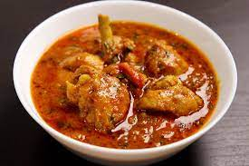

Daba Chicken

Description:-
CAUTION:This Indian dish is higly addictive in taste try it on your own risk.
Daba style chicken curry : This dish is the trademark of northindian non-veg. It is prepared by using only domestic igredients that are available locally. That's what makes it Daba style as no fancy or western ingredients like olive oil and shit are used.
Ingredients:
- Chicken-250gm
- khada masala packet-1
- onion-2
- tomato-2
- green chilies-4
- ginger-garlic-paste-1
- chicken-masala-packet-1
Steps
- Marinate the chicken
mix the chicken with ginger-garlic-paste, turmeric powder, red-chili powder and salt. Leave it for 30 min
- Saute onions
heat oil or ghee in a kadai and add the finely chopped onions, tomatoes & green chilies. heat till it turns pitch black.
- Spices
Add coriander,cumin powder and garam masla.Stir it well and cook for a couple of minutes and let the spices release their flavour
- Cook marinated Chicken
Add the marinated chicken and let it cook on medium heat and occasionally stir that until the chicken becomes brown
- Leave
leave for 5 min on low heat and that's it